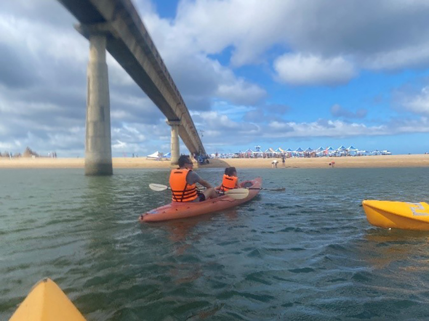
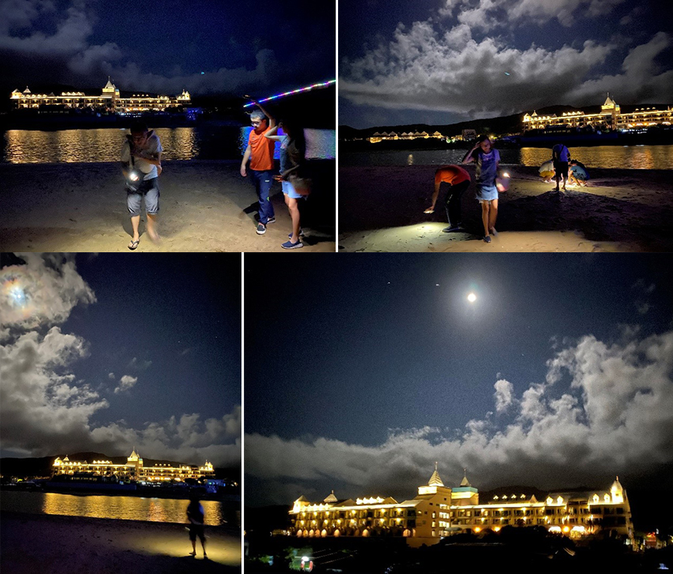

暑假開始前後，為了想讓明年參加會考的兒子在邁入密集暑輔、補習、夜自習、大小模擬考前好好玩一場後，再收心專心準備考試，決定找個海灘行程全家出遊。搜尋各大旅遊網站、飯店、景點，考慮時間與距離，最後在報復性出遊幾乎滿檔的飯店中，福容大飯店福隆館釋出一間家庭房，一泊二食，飯店距離沙灘步行不到10分鐘，立刻下訂。
|  |
八月的第一天正好是週六，一大早叫醒三個孩子，立刻開車前往福隆海邊，天氣大好，但風很大，算是風和日麗的好日子，當時還不知道有個熱帶氣旋正逐步靠近台灣。一到飯店完成Check-in，進行老公預訂的第一個行程：划獨木舟，教練帶著我們到福隆海灘旁天然形成的內河進行活動。
 |
 |
特別值得一提的是，因為雙溪河在福隆入海，形成內河、外海的雙重景觀，彎月型拱橋連結兩處，內河河面寬廣、水流平穩，外海的海水浴場寬約60公尺，長約3000公尺，非常適合獨木舟、風帆、拖曳傘、游泳、衝浪、滑水等活動(註1)；當天還有近期很風行的SUP(立槳衝浪)、青少年風帆訓練課程，內河的環境安全性高，教練也會全程陪同，非常值得體驗喔。 第一次和孩子們一起划獨木舟，兩兩一船，沒想到孩子們全都不想跟我一船，連平常老是要跟著我的小女兒，居然直接黏著爸爸一組，我只好跟教練一船！原來孩子們體驗過我恐怖的開車，現在只要是搭乘交通工具，立刻都會自我身邊逃走！這是該高興還是該難過呢！？哈哈…… 其實這也是我第一次划獨木舟呢！但是興奮和期待的心情取代新手的不安，開心下海。出發時約下午2:00左右，風很大，陽光不刺眼，划在水面上有種清涼愜意的感覺，孩子們也玩得很開心！健談的教練是個老練的玩家，怎麼划省力、如何配合風向、水象，還有要觀察海水漲退潮等分享很多，跟著教練划，彷彿也上了一堂水上活動課程。 |
結果，回程時一個側風，我真的翻船了！整個人忽然翻入海水下，下意識大口呼吸喝了好多鹹海水，眼睛在水裡看到獨木舟的拉繩，用力拉住，藉著救生衣的浮力鑽出水面，咳！咳！咳！海水好鹹！雖然翻船了，可是我一點也不害怕，覺得超級好玩！意外收穫的是：未戴蛙鏡的我，下意識在水裡頭張開眼睛了！不過還需要加強訓練，若下次不小心落海時不要大口呼吸！還有，因為翻船時已靠近岸邊，其實我能踩到水底，哈！後來上岸後，小女兒竟然好似未卜先知似地拍著胸口說：「好險沒跟媽麻一船！媽麻真的翻船了！」><
除了這個好玩的水上活動外，我還預約了飯店的一項免費行程：夜訪沙蟹。晚飯後，由飯店人員帶領我們前往夜晚的海灘尋找沙蟹的蹤跡。我們徒步走過距離飯店不遠處的彎月型拱橋，來到沙灘，接著飯店導覽人員拿著手電筒引領著我們在海沙裡輕手輕腳地找沙蟹。
夜裡的海灘和白天的豔麗不同，沒有滿滿人潮和比基尼，沒有剌眼的陽光和鼎沸人聲，當天晚上正好接近滿月，在月光照耀下，浪花拍打伴隨海浪聲，海風吹拂，還有星空，清楚看得到夏季大三角呈現在夜空中，有明亮的木星、土星，星宿二、天津四、北斗七星！襯托著不遠處美麗的夜晚飯店輪廓，搭配彎月橋和內河，好美麗的夜景。
|  |
在導覽人員引導下，找到好多好多沙蟹，我們小心翼翼地走在沙灘上，出沒的沙蟹讓孩子們，甚至是同行的大人們都驚呼連連！這是一堂珍貴的海洋動物生命課程，以不驚擾的方式，親身了解我們平常玩樂的沙灘其實潛藏著許多生命，所有的生物，都以自己獨特的、旺盛的生命力與人類同在，提醒著我們除了關注眼前的自身之外，這個地球，甚至這個宇宙還有更多不同的存在。特別是這個夏夜，讓人更加體會到人類的渺小、浩瀚的宇宙世界、與生命的珍貴。
註1：資訊來源參考TravelKing旅遊王